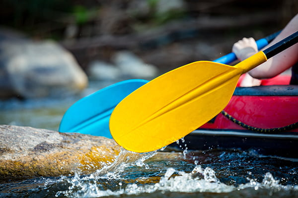
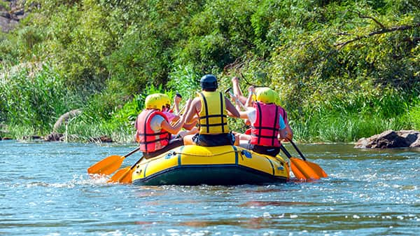
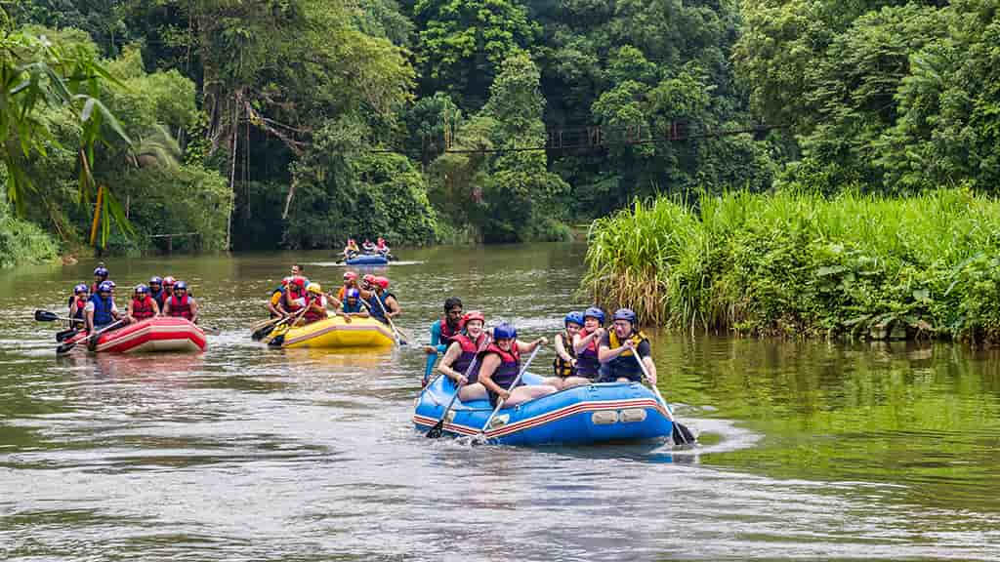
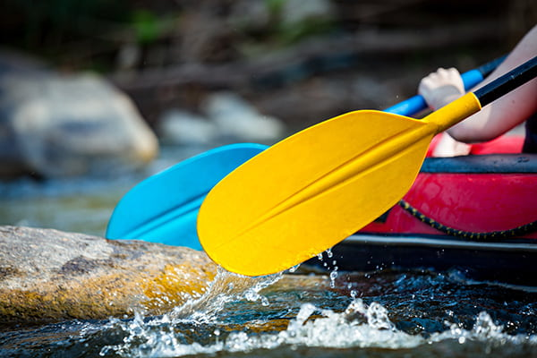
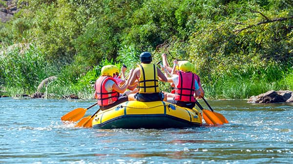
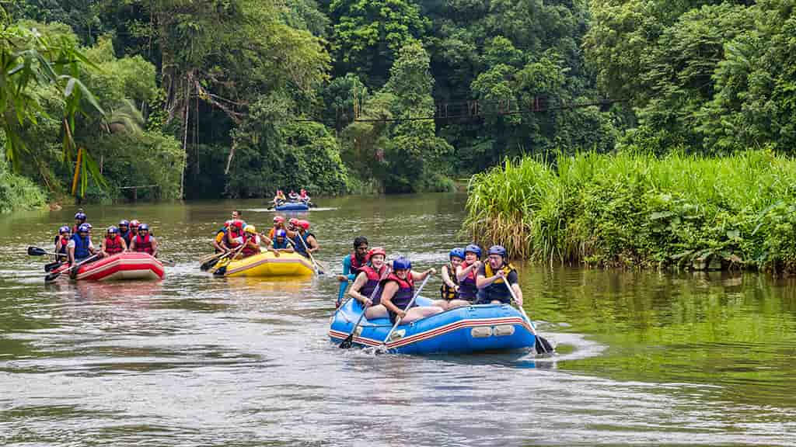

At Allsmiles Rafting Co, our purpose is to connect people with the thrill of nature through exhilarating river experiences. Our mission is to provide safe, unforgettable rafting adventures that foster a love for the outdoors and respect for our rivers.

 




